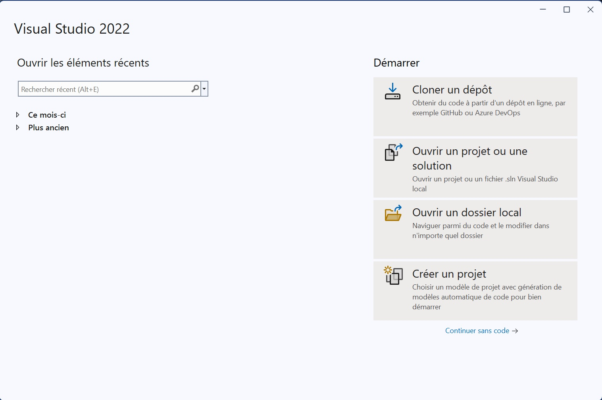
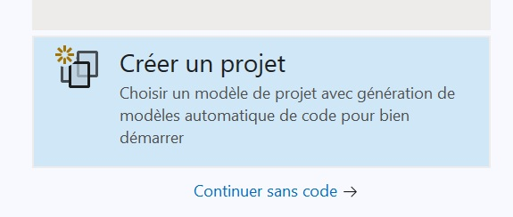
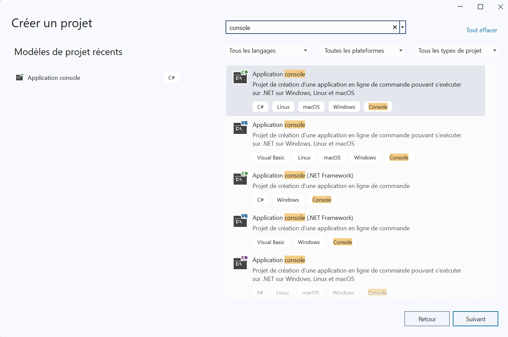
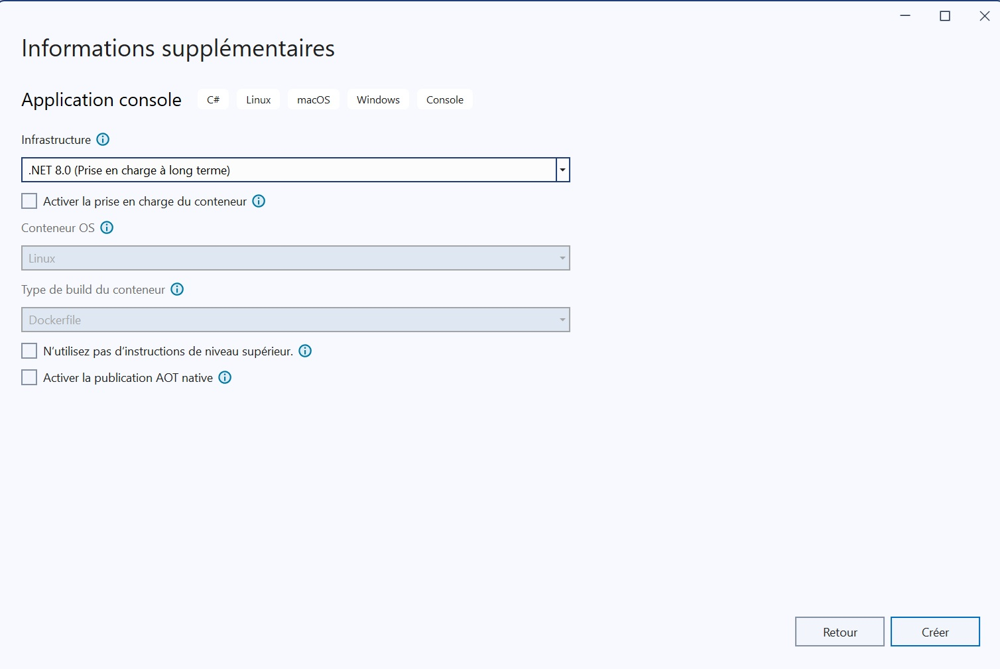
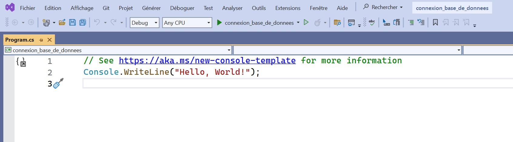
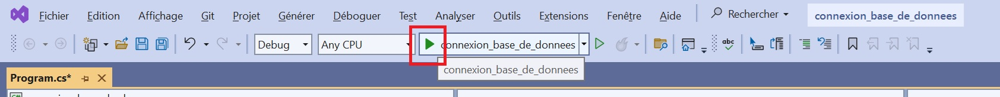
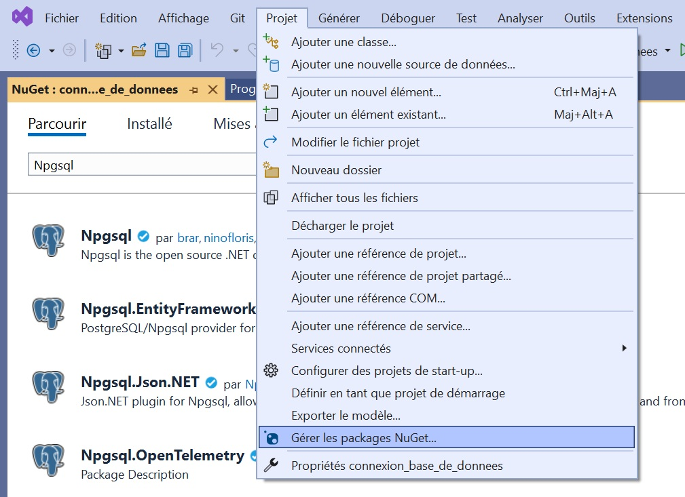
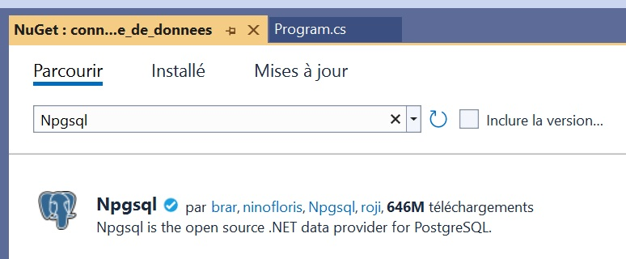
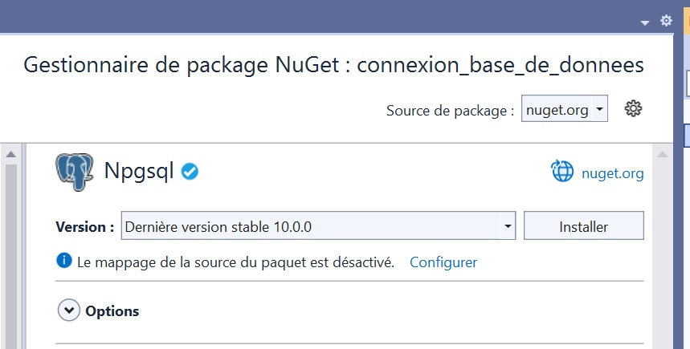

Connexion à la base de données
- Introduction
- Application console .net
- connexion à la base de données
- réaliser une requête
- appeler une fonction ou une procédure stockée
- solutions, projets et séparation des couches
- Exercices
- Conclusion
Introduction
Dans ce chapitre, nous allons sortir du domaine des bases de données pour réaliser un court programme
permettant de communiquer avec une base de données.
Le but de ce chapitre n'est pas d'aller en profondeur dans cette voie, mais simplement d'avoir un premier
aperçu de ce que cela implique.
Vous irez plus loin dans ce domaine dans vos prochains cours de web et projets.
Au terme de ce cours, vous aurez connecté une base de données à un programme, réalisé des requêtes depuis la
couche applicative ainsi qu'appelé vos fonctions et procédures stockées.
Ceci vous permettra de tester votre base de données de façon plus automatisée.
Pour le suivi de ce chapitre, il est attendu que l'étudiant dispose d'une base de données postgresql.
Il est nécessaire que l'étudiant ai abordé les bases de la programmation et dispose de visual studio ou d'un
autre moyen d'écrire et de compiler des programmes en .net
Il est admis que les étudiants auront des connaissances variées en C# et .net. Ainsi, ce cours est écrit
avec l'intention d'accommoder ces différences de niveau.
Application console .net
Notre programme sera réalisée avec le framework .net en utilisant le langage de programmation C#.
Commençons par créer, comme le souhaite la tradition, un Hello world.


Sur l'écran de sélection de projet, se diriger vers la section de droite et sélectionner "Créer un projet"

Si nécessaire, utilisez la recherche pour sélectionner le type de projet "Application console"
Attention à bien prendre le type de projet utilisant le C# et ne comportant pas la mention ".net framework"
(ancien framework)

Configurez votre projet pour utiliser .NET 8.0 (d'autres versions pourraient avoir des différences mineures à majeures par rapport au code présenté) et, sur l'écran suivant, donnez un nom à votre projet.

Voilà! Vous devriez avoir votre Hello world déjà codé dans votre éditeur et semblable à ceci :
Console.WriteLine("Hello, World!");
Notez la différence avec votre cours de C.
Ici, nous n'utilisons pas la fonction printf, mais une méthode de la classe Console disponible par défaut
dans les applications consoles en .net
En argument, une string "Hello world" est donnée.
Nous utiliserons le même principe pour afficher les résultats de notre connexion à la base de données.
Lançons le programme en mode débug avec cette icône ou la touche F5

Attention que la touche juste à droite, une flèche verte vide, lance l'application sans mode debug.
Si vous désirez atteindre un break point, ce ne sera pas possible si vous lancez l'application de cette
manière.
Connexion à la base de données
Pour nous connecter à une base de données, la première étape, cruciale... Est d'avoir une base de données.
Dans ce chapitre, nous allons rester sur quelque chose de très simple avec peu de tables et peu de
configurations.
CREATE DATABASE test_connexion;
Ceci suffira pour notre base de données.
Ajoutons une table ainsi qu'un record pour vérifier que ton fonctionne comme prévu
CREATE TABLE utilisateur(
pseudo varchar(7) PRIMARY KEY,
prenom varchar(64) NOT NULL,
nom varchar(64) NOT NULL,
animal_prefere varchar(64)
);
INSERT INTO utilisateur
(pseudo, prenom, nom, animal_prefere)
VALUES
('JOSM001', 'John', 'Smith', 'Chat'),
('JOSM002', 'Joseph', 'Smith', NULL);
Normalement, rien qui doit vous surprendre à ce niveau.
Deux particularités : le pseudo est composé des deux premières lettres du nom et prénom plus un entier
incrémental et l'animal préféré est nullable
Maintenant, il va falloir configurer votre projet C# pour pouvoir se connecter à cette nouvelle base de données.
Tout d'abord, nous allons avoir besoin d'un data provider.
Dans notre cas, il s'agira du package Npgsql qui nous permettra de nous connecter et de communiquer avec la
base de données.
Pour ajouter un package, sur visual studio, vous pouvez allez dans le menu "Projet/Gérer les packages NuGet"
et rechercher le package Npgsql



Maintenant que le package est téléchargé, nous allons devoir le configurer en lui donnant toutes les
informations nécessaires pour se connecter à notre base de données.
Pour cela, nous allons utiliser une "connection string" : Une chaine de caractère formatée de telle manière
a être lue par le data provider pour y trouver les informations nécessaire de connexion.
Pour l'instant, faisons ça en dur dans notre code.
Ne jamais faire ça en dur dans votre code.
Ici, l'idée est de présenter rapidement un code fonctionnel.
Avoir ces informations de connexion dans votre code vous expose à des risques de sécurité.
//Création d'une variable de type string //Il s'agit de notre connection string disposant des paramètres de connexion string connectionString = "Host=localhost;Username=postgres;Password=toor;Database=test_connexion";
Ce code est la version minimal nécessaire pour créer une connection string.
Elle présente l'adresse de l'host (avec le port si nécessaire),
L'utilisateur pour la connexion,
Le mot de passe qui sera utilisé,
La base de données sur laquelle se connecter.
Il est possible de renseigner plus d'informations lors de la connexion. Pour cela, se référencer à la documentation du package
utilisé
Une fois que cette connection string est prête, nous allons créer une instance de notre provider qui sera configuré avec notre connection string.
//D'abord, nous importons le package pour pouvoir en utiliser les classes using Npgsql; //Création d'une variable de type string //Il s'agit de notre connection string disposant des paramètres de connexion string connectionString = "Host=localhost;Username=postgres;Password=toor;Database=test_connexion"; //On crée une instance de NpgsqlDataSourceBuilder avec, en argument, notre connection string //Il ne s'agit pas de notre provider, uniquement d'un objet permettant de créer correctement celui-ci var dataSourceBuilder = new NpgsqlDataSourceBuilder(connectionString); //Une fois ce builder créé, nous pourrions l'utiliser pour ajouter des options supplémentaires //Et finaliser son instanciation avec sa méthode Build(); //Par exemple, comme ceci //dataSourceBuilder // .ConfigureJsonOptions(default) // .EnableParameterLogging() // .EnableDynamicJson() // .Build(); //Pour notre exemple, nous n'avons pas besoin de configuration supplémentaire. await using var dataSource = dataSourceBuilder.Build();
Nous sommes maintenant capable de nous connecter à notre base de données
Mais avant de continuer, notez deux mot-clés utilisés sur la dernière ligne de notre code C# : await et
using
await permet de gérer du code asynchrone.
Dans une exécution normale de notre code, comme dans vos cours de C, nous avançons ligne par ligne et nous
exécutons, jusqu'à sa complétion, chaque ligne.
Ceci a normalement un effet "bloquant". Les ressources sont utilisées pour cette opération et ne sont pas
disponible pour autre chose tant que cette opération n'est pas terminée.
Ici, la méthode dataSourceBuilder.Build(); est dite "asynchrone".
Le code asynchrone n'est pas "bloquant". Nous allons réaliser une opération, souvent plutôt longue,
éventuellement avec des moments d'attentes (feedback lors de connexion, par exemple) et, pendant ce temps,
nous pouvons allouer des ressources à d'autres choses
Si nous n'utilisons pas le mot clé "await", la prochaine ligne de code est donc exécutée "sans attendre" la
complétion de la ligne asynchrone.
Ceci permet, par exemple, de réaliser des appels à des serveurs en parallèle. Vous savez qu'obtenir les
réponses du serveur va prendre du temps. Mais ce temps ne vous prend pas de ressources. Alors autant les
allouer à d'autres opérations. Vous commencez par lancer les appels au serveur, vous réaliser vos propres
opérations et, quand le serveur vous aura répondu, il sera toujours temps d'utiliser le résultat.
Imaginez vous en train de faire un petit déjeuner avec oeuf à la coque et café.
Lancer la machine à café, mettre l'eau à chauffer pour les oeufs... Sont des opérations asynchrones que vous
ne souhaitez probablement pas attendre sans rien faire. Vous pourriez plutôt préparer vos mouillettes
pendant ce temps.
Mais alors, si le but est de lancer plusieurs opérations en même temps, pourquoi utiliser le mot-clé await?
Vous pourriez ne pas en avoir besoin ! Dans l'improbable cas que tout se déroule comme prévu à chaque fois.
Si votre eau est bouillante quand vous avez terminés vos mouillettes, vous pouvez mettre vos oeufs à cuir
sans attendre. Mais dans le cas ou votre eau ne serait pas encore prête, vous attendriez.
C'est pareil ici.
Vous n'avez besoin d'utiliser await qu'au moment auquel vous savez que vous avez vraiment besoin d'attendre
le résultat avant de réaliser la suite.
Il s'avère que dans le très petit bout de code que nous allons réaliser, ce sera systématiquement à l'appel
de la méthode asynchrone.
Pour ce qui est du "using", dans ce cas, il permet de libérer automatiquement des ressources.
Souvenez-vous, en première année, vous deviez allouer et libérer la mémoire utilisée.
Ici, using permet d'automatiser ce processus.
Si votre objet implémente l'interface IDisposable, le mot clé using ajouté à la création de la ressource
aura pour effet de libérer les ressources à la sortie du bloc de code courant. (dans notre cas, cette fin de
bloc représente aussi la fin de notre programme)
Lors de la manipulation de connexions aux base de données, il sera important de correctement libérer les
ressources une fois qu'elles ne sont plus utilisées.
Réaliser une requête
Nous y sommes presque, nous avons tout ce qui est nécessaire pour se connecter à notre base de données et la
dite db
Il nous suffit d'ajouter quelques lignes :
//Création d'une commande. À ce stade, la db n'a pas encore reçue la requête.
await using var command = dataSource.CreateCommand("SELECT * FROM utilisateur");
//Ici, nous exécutons la requête. Mais pour en exploiter les résultats, nous allons devoir manipuler le reader
await using var reader = await command.ExecuteReaderAsync();
//Et lire chaque ligne du dataset retourné.
//Pour ce faire, la méthode ReadAsync (et read) va faire deux choses
//Elle va retourner un boolean permettant de savoir si nous avons encore des lignes à lire (true) ou pas (false)
while (await reader.ReadAsync())
{
//Elle va aussi déplacer le reader sur la prochaine ligne du dataset.
//Permettant de récupérer les valeurs correspondantes
Console.Write(reader.GetString(0));
Console.Write(" ");
Console.Write(reader.GetString(1));
Console.Write(" ");
Console.WriteLine(reader.GetString(2));
}
Exécutez ce code et voyez le résultat.
Chaque ligne de votre table est lue et affichée dans la console.
C'est fait? Modifiez maintenant le code en ajoutant ces lignes dans le while
Console.Write(" ");
Console.WriteLine(reader.GetString(3));
Aïe, que s'est-il passé?
Souvenez-vous, dans notre table, nous avons spécifié que les 3 premiers champs étaient non nullable.
Nous avons par contre laissé le champ "animal préféré" comme nullable et nous avons pris soin d'ajouter une
valeur nulle pour l'un des enregistrements.
Ici, en utilisant la méthode GetString() du reader, nous nous exposons a un risque d'erreur si la valeur est
nulle.
Pour résoudre ce problème, nous allons devoir traiter correctement les types de retour de nos requêtes.
Une première chose va être de spécifier explicitement les colonnes récupérées (plutôt que d'utiliser le
joker *) dans notre requête.
Ainsi, nous pourrons au moins savoir à quoi nous attendre.
await using var command = dataSource.CreateCommand("SELECT pseudo, prenom, nom, animal_prefere, 4 FROM utilisateur");
Maintenant que nous savons quelles colonnes sont récupérées et dans quel ordre, nous allons pouvoir
spécifier le type attendu.
Et vous aurez bien entendu remarqué le "4" qui s'est glissé dans ma requête. Pourquoi à votre avis?
Modifiez la récupération des valeurs 3 et 4 avec ces lignes et prenez soin de plancer un breakpoint à ce
niveau pour prendre connaissance de la valeur de retour
var animalPrefere = reader.GetValue(3); var entier = reader.GetValue(4);
GetValue, à la différence de GetString, retourne un objet.
On parlera ici de boxing (de box, la boite. Pas le sport boxe)
La valeur retournée est une string ou un entier ou un autre type... Mais englobé dans un objet.
Il faudra d'ailleurs réaliser un "unboxing" pour manipuler le type primitif boxé. Essayez d'ajouter cette
ligne de code et lisez l'erreur que vous donne le compilateur
entier = entier + 1;
Et qu'est-ce qu'il se passe quand on dispose d'un null?
Pareil, un objet. Mais cette fois-ci, de type DBNull... Ce qui n'était pas compatible avec la méthode
"GetString".
Alors rassurez-vous, il est tout à fait possible d'utiliser le GetString ainsi que le GetBoolean,
GetDecimal,... Tant que vous êtes certains de ne pas tomber sur un null.
Il s'agit bien du type DBNull et pas simplement de la valeur "null". Un test de ce genre ne fonctionnera donc pas "if(reader.GetValue(x) == null)"